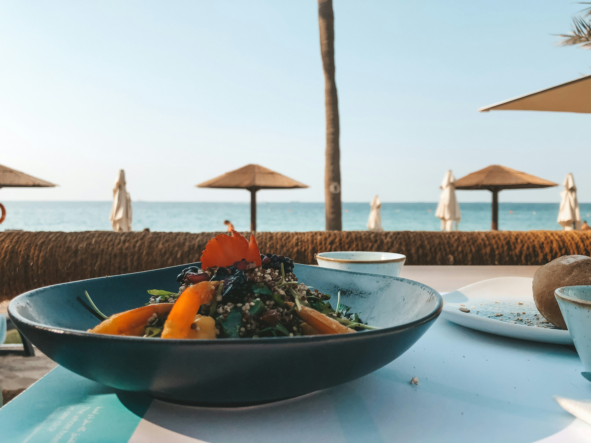

Dining
Restaurants:
Currently has 10 restaurants: five serve mostly local fish and rice, three serve American-style meals, and two serve Pan-Asian cuisine.
Grocery Stores:
Taniti has two supermarkets, two smaller grocery stores, and one convenience store that is open 24 hours a day.
Lodging
Lodging:
Taniti has a wide variety of lodging that ranges from an inexpensive hostel to one large, four-star resort. There are many small, family-owned hotels and a growing number of bed and breakfasts. All types of lodging are strictly regulated and regularly inspected by the Tanitian government.

Activities
Entertainment:
people visit Taniti to enjoy the beaches, explore the rainforest, and visit the volcano. However, there are other things to do, including visiting a local history museum, going on chartered fishing tours, snorkeling, zip-lining in the rainforest, visiting several pubs, including a microbrewery, dancing at a new dance club, seeing a movie, taking helicopter rides, playing at an arcade, visiting art galleries, and bowling. Also, a nine-hole golf course should be operational by next year. Many of these activities are in Merriton Landing, which is a rapidly developing area on the north side of Yellow Leaf Bay.
Sightseeing:
Most tourists spend most of their time in Taniti City, which boasts native architecture and nearby white, sandy beaches that encircle Yellow Leaf Bay.
Other popular activities:
- boat or bus tours of the island
- hikes in the rainforest
- visits to Taniti’s active volcano.
Transportation
Almost all visitors arrive in Taniti by air, though some arrive on a small cruise ship that docks in Yellow Leaf Bay for one night per week. Taniti is served by a small airport that can accommodate small jets and propeller planes. Taniti is in the process of expanding the airport so larger jets will be able to land on the island within the next few years.
Ground Transportation
- Public buses serve Taniti City and run from 5 a.m. to 11 p.m. every day.
- Private buses serve the rest of the island.
- Taxis are available in Taniti City
- Rental cars can be rented from a local rental agency near the airport.
- Bikes and helmets are available to rent from several vendors (helmets are required by law).
Taniti City is flat and very walkable. Many tourists stay in the area surrounding Merriton Landing: this area is easy to explore on foot.